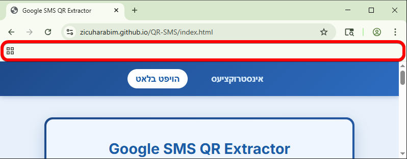
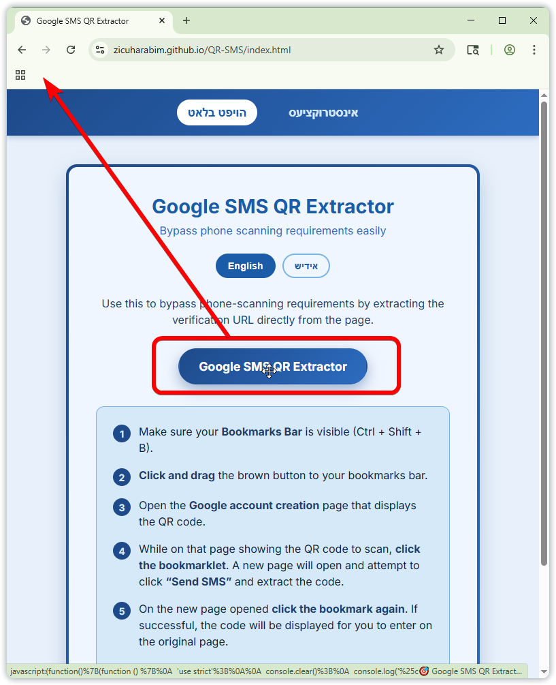
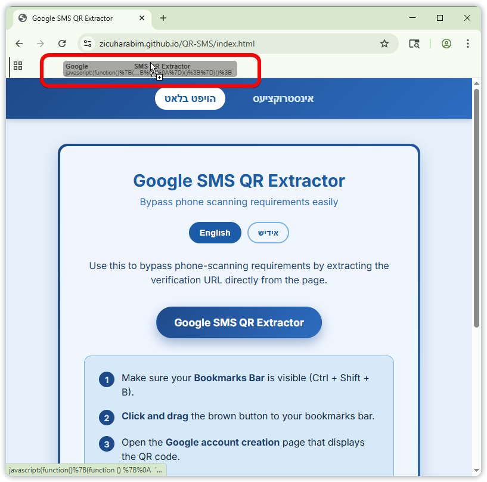

אנווייזונגען וויאזוי צו נוצן
שטאפל 1:
גייט צום לינק: https://zicuharabim.github.io/QR-SMS/index.html
שטאפל 2:
מאכט זיכער אז די Bookmarks Bar איז אפן.



מען קען דאס עפענען דורכ'ן דרוקן Ctrl + Shift + B צוזאמען.
אדער דורכ'ן אנשטעלן ביי די סעטינגס.
שטאפל 3:
אצינד גיי צום ברוינעם קעסטל, קליק אויף דעם מיט'ן מייזל, און אזוי קליקנדיג
'שלעפ' דאס אריין אינעם 'בוקמארקס באר'.


שטאפל 4:
איר וועט יעצט זען דעם 'בוקמארק' אין אייער 'באר'.

שטאפל 5:
איינמאל דער בוקמארק ליגט אין דעם באר, גייט צום בלאט מיט'ן QR קאוד, און קליקט אויפ'ן 'בוקמארק'.

שטאפל 6:
דאס וועט אויטאמאטיש עפענען א נייעם טעב. אין דעם נייעם טעב קליקט נאכאמאל אויפן בוקמארק.

שטאפל 7:
עס וועט זיך עפענען א פאפ-אפ, וואס וועט אייך געבן א 'פאון נאמבער' פון 6 ציפערן, מיט א 'מעסעדזש'.

שטאפל 8:
איר דארפט א אצינד טעקסטן אקוראט דעם 'מעסעדזש' צום אנגעבענעם 'פאון נאמבער'.

שטאפל 9:
פאר אייער באקוועמליכקייט קענט איר קאפיען דעם 'נומער', דעם 'מעסעדזש', אדער ביידע צוזאמען, דאס צו קענען
אריינשיקן באיזה אופן צו אייער פאון.

שטאפל 10:
איר קענט פארמאכן דעם פאפ-אפ. עס קען נעמען אפאר סעקונדעס, ביז איר וועט זען א מעסעדזש אז איר קענט
צוריקגיין צום אנדערן טעב.

שטאפל 11:
גייט צוריק צום אנדערן טעב, און ענדיגט דאס אויפסעטן.

אייער אקאונט איז אצינד באשטעטיגט!